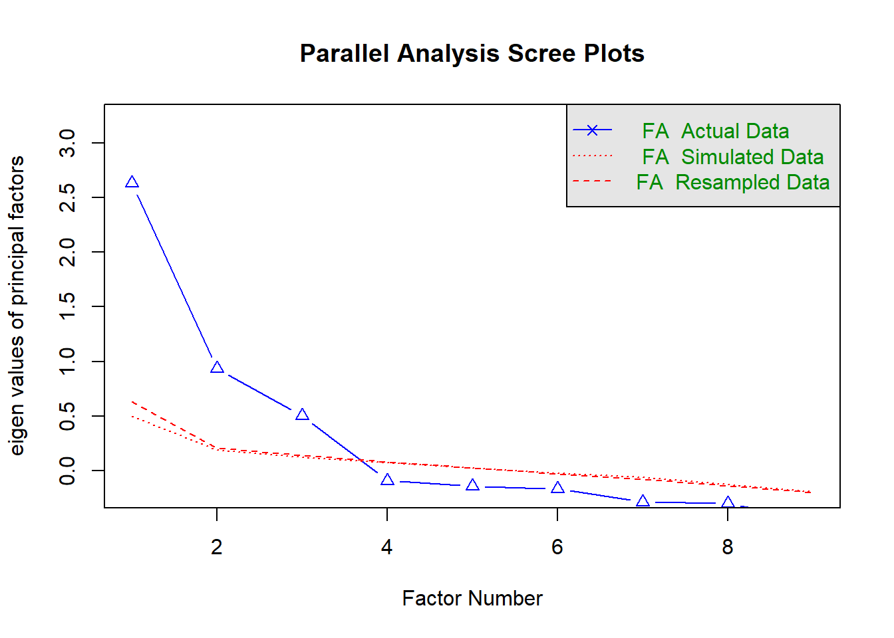

library(lavaan)
library(semTools)
library(psych)
library(Hmisc)
library(dplyr)
# Loading the data
Data <- lavaan::HolzingerSwineford1939Basic Analysis for Scale Archiving
ZIS R-Tutorials
Introduction
The following tutorial presents the basic analysis required for an instrument to be archived in the Open Access Repository for Measurement Instruments (ZIS). As an example, we use a scale with continuous indicators, so not all parts of the analysis are appropriate for instruments with categorical indicators. We point this out whenever relevant. The treatment of categorical indicators is covered in a separate tutorial.
Data Preparation & Descriptive Analysis
In this tutorial, we will use the HolzingerSwineford1939 data set, which contains mental ability test scores of seventh- and eighth-grade children from two different schools (Pasteur and Grant-White).
First, let’s compute the descriptives for the nominal variables — the counts. We can compute the counts using the table() function.
# Count for a single variable
table(Data$sex,
useNA = "always")
1 2 <NA>
146 155 0 If we have multiple variables, we can use a loop that iterates over the elements of the nominal_variables vector and produces as many tables with counts as there are variables in that vector.
# Define nominal variables
nominal_variables <- c("sex", "school", "grade")
# Count for multiple variables
nominal_sample_statistics <- list()
for (variable in nominal_variables) {
frequency_table <- table(Data[, variable],
useNA = "always")
nominal_sample_statistics[[variable]] <- frequency_table
}
nominal_sample_statistics$sex
1 2 <NA>
146 155 0
$school
Grant-White Pasteur <NA>
145 156 0
$grade
7 8 <NA>
157 143 1 For continuous variables, we compute the mean, standard deviation, skewness, excess kurtosis, and the percentage of missing data using the base R functions and skew() and kurtosi() functions from the psych package.
# Compute aggregated age variable of year and months
Data$age <- (Data$ageyr * 12 + Data$agemo) / 12
# Estimate mean, sd, skew, kurtosis, and percentage missing
avrg_ <- mean(Data$age, na.rm = TRUE)
sd_ <- sd(Data$age, na.rm = TRUE)
skw_ <-psych::skew(Data$age, na.rm = TRUE)
krtss_<- psych::kurtosi(Data$age, na.rm = TRUE)
mis_ <- sum(is.na(Data$age)) / nrow(Data)
smmry <- data.frame(
var = "age",
avrg_ = avrg_,
sd_ = sd_,
skw_ = skw_,
krtss_ = krtss_,
mis_ = mis_
)
# Format the numeric columns to 2 decimal places using sprintf
smmry <- smmry |>
dplyr::mutate(across(c(avrg_, sd_, skw_, krtss_),
~ sprintf("%.2f", .)))
# Rename columns
colnames(smmry) <- c("Variable", "Mean", "Standard Deviation", "Skewness", "Kurtosis", "% Missing Data")
smmry Variable Mean Standard Deviation Skewness Kurtosis % Missing Data
1 age 13.44 1.02 0.70 0.10 0Alternatively, we could use the describe() function from the psych package, which can be particularly useful with multiple continuous variables. The only caveat of that function is that it will not produce the percentage of missing observations per variable automatically, which we could easily circumvent by running colSums(is.na(data))/nrow(data), where colSums(is.na(data)) counts the occurrences of missing data for the variables in our data set, and nrow(data) gives us the total number of rows.
Dimensionality Assessment & Factorial Validity
First, we build a look-up table where items are assigned to different subscales. We will use the table for the subsequent analyses in this document.
# Build lookup table for required items
lookup_table <- data.frame(item = paste("x", c(1:9), sep = ""),
subscale = c(rep(c("visual", "textual", "speed"),
each = 3))
)Exploratory Factor Analysis
To decide how many latent dimension to extract, we will first use parallel analysis (for the factor solution, not principle components) and exploratory factor analysis. We run parallel analysis using the following syntax:
set.seed(8576456)
# Conduct parallel analysis display screeplot
parallel_analyses_efa <- psych::fa.parallel(Data[ , unlist(lookup_table$item)],
fa = "fa", # Method to explore dimensionality: efa
fm = "minres", nfactors = 1, SMC = F,
n.iter = 30, # quant = .95,
cor = "cor") Parallel analysis suggests that the number of factors = 3 and the number of components = NA

For categorical data, we would need to change the cor = argument in the fa.parallel() function to "poly" and use polychoric correlations.
The idea behind parallel analysis in exploratory factor analysis (EFA) involves comparing the eigenvalues from our actual data to those from randomly generated data to determine the number of factors to retain. The random datasets match our actual dataset in terms of sample size and the number of variables. Eigenvalues are calculated for both the real data and the random data. This process is repeated multiple times to generate a distribution of eigenvalues for the random data.
The key step is then to compare the eigenvalues from our actual data with the mean (or sometimes the 95th percentile) of the eigenvalues from the random datasets. We retain those factors where the actual eigenvalue exceeds the corresponding eigenvalue from the random data. In our case, Figure 1 with a scree plot suggests that we should extract three factors.
Be careful
Quite often, researchers use the Kaiser-1 rule to decide on the number of latent factors to extract. That is, they check how many eigenvalues are greater than 1. This method has been shown to not be robust and can result in extracting too many latent dimensions (see, Russell 2002; Van Der Eijk and Rose 2015). Hence, you should probably refrain from using it.
Knowing how many factors to extract, we will estimate now an EFA model with three factors using the oblique rotation and minimal residuals (a.k.a. ordinary least squares) as the extraction method1.
# Estimate exploratory factor analyses
efa <- psych::fa(Data[ , unlist(lookup_table$item)],
fm = "pa",
nfactors = 3,
rotate = "oblimin",
scores = "regression", oblique.scores = FALSE,
SMC = TRUE,
cor = "cor")
# matrix of factor loadings
round(efa[["loadings"]], digits = 2)
Loadings:
PA1 PA3 PA2
x1 0.20 0.59
x2 0.51 -0.12
x3 0.69
x4 0.85
x5 0.89
x6 0.81
x7 -0.15 0.73
x8 0.12 0.69
x9 0.38 0.46
PA1 PA3 PA2
SS loadings 2.219 1.276 1.237
Proportion Var 0.247 0.142 0.137
Cumulative Var 0.247 0.388 0.526The output of the fa() function is very detailed and potentially overwhelming, so we are not showing it in its entirety. Instead we focus on the matrix of factor loadings.
By looking at the matrix, we can see that items x1-x3 have high loadings on the factor PA3, items x4-x6 on the factor PA1, and items x7-x9 on PA2. We will use this insight to specify our confirmatory model.
Confirmatory Factor Analysis (CFA)
To estimate the confirmatory factor analytic model, we will use the lavaan package. We specify three models:
- Unidimensional model (one-factor model);
- Three-dimensional congeneric model;
- Three-dimensional tau-equivalent model.
While it often makes sense to compare models 1 and 2 because model 1 is typically considered more parsimonious (having fewer latent factors), it might not be clear why we would estimate models 2 and 3, and what the terms “congeneric” and “tau-equivalent” even mean.
In the congeneric model, we assume that the indicators measure the same construct but not necessarily to the same degree. With the tau-equivalent model, we assume that the indicators measure the construct to the same degree, and we enforce this by constraining the unstandardized factor loadings of each factor to equality. If the fit of the latter is not substantially worse than the former, we can conclude that the indicators are tau-equivalent (Kline 2016).
One of the significant advantages of the tau-equivalent model is that it allows for greater comparability of scores across independent studies using the same items, as the scores do not depend on study-specific factor loadings (Widaman and Revelle 2023).
To estimate the three models, we first define the model syntax. Then we specify the estimator as Robust Maximum Likelihood (MLR) and set the option std.lv = TRUE to impose the identification constraints on the model, i.e., the mean of the latent variable is equal to 0 and the variance is equal to 12. We use MLR by default as it also works in situations where continuous indicators have severely non-normal distributions.
# Define models
one_factor_model <- '
g_factor =~ x1 + x2 + x3 + x4 + x5 + x6 + x7 + x8 + x9
'
three_factor_model <- '
visual =~ x1 + x2 + x3
textual =~ x4 + x5 + x6
speed =~ x7 + x8 + x9
'
three_factor_tau_model <- '
visual =~ a*x1 + a*x2 + a*x3
textual =~ b*x4 + b*x5 + b*x6
speed =~ c*x7 + c*x8 + c*x9
'
# Estimate cfa
# One factor model
one_factor_cfa <- lavaan::cfa(model = one_factor_model,
data = Data,
estimator = 'mlr',
std.lv = TRUE)
# Three factor model
three_factor_cfa <- lavaan::cfa(model = three_factor_model,
data = Data,
estimator = 'mlr',
std.lv = TRUE)
# Three factor model model with essential tau equivalence
three_factor_tau_cfa <- lavaan::cfa(model = three_factor_tau_model,
data = Data,
estimator = 'mlr',
std.lv = TRUE)For categorical data, we would change the cfa() call and specify which variables should be treated as categorical by using the ordered argument. lavaan would then automatically switch to an appropriate estimator — diagonally weighted least squares.
Once the models are estimated and no warning messages are shown, we can inspect the global fit of the models.
# model fit
# Define fit measures of interest
# use robust versions
fit_measures <- c("chisq.scaled", "df", "pvalue.scaled",
"cfi.robust", "rmsea.robust", "srmr",
"aic", "bic", "bic2")
# Extract model fit
round(lavaan::fitMeasures(one_factor_cfa, fit.measures = fit_measures), digits = 3) chisq.scaled df pvalue.scaled cfi.robust rmsea.robust
315.833 27.000 0.000 0.676 0.187
srmr aic bic bic2
0.143 7738.448 7805.176 7748.091 round(lavaan::fitMeasures(three_factor_cfa, fit.measures = fit_measures), digits = 3) chisq.scaled df pvalue.scaled cfi.robust rmsea.robust
87.132 24.000 0.000 0.930 0.092
srmr aic bic bic2
0.065 7517.490 7595.339 7528.739 round(lavaan::fitMeasures(three_factor_tau_cfa, fit.measures = fit_measures), digits = 3) chisq.scaled df pvalue.scaled cfi.robust rmsea.robust
103.426 30.000 0.000 0.913 0.092
srmr aic bic bic2
0.084 7527.595 7583.202 7535.630 First, we inspect the scaled chi-square and the corresponding p-values. They suggest that our models fail the exact-fit test and do not fit the data well.
We also check the most common approximate fit indices, i.e., the robust versions of the Comparative Fit Index (CFI), the Root Mean Square Error of Approximation (RMSEA), and the Standardized Root Mean Square Residual (SRMR)3. Different cut-off values are proposed in the literature for these indices (e.g., Hu and Bentler 1999; Byrne 1994). We will assume that CFI values smaller than .950, RMSEA values greater than .08, and SRMR values greater than .10 suggest a poor fit. In the case of all our models, the indices suggest an unsatisfactory fit, with the three-factor model with varying loadings being the best-fitting.
Be careful
Even though in this tutorial we follow the common practice of using fixed cut-off values for evaluating model fit, this approach is not recommended by current literature. The universally used cut-off values are based on simulation studies with a limited set of conditions, which can substantially deviate from the ones researchers face (see, Groskurth, Bluemke, and Lechner 2023; McNeish and Wolf 2023). Ideally, researchers should derive the cut-offs using simulation-based techniques. This can be done using, for example, the Shiny app developed by McNeish and Wolf (2023) - https://dynamicfit.app/connect/.
We can use a statistical test to compare these models, specifically the scaled chi-squared difference test. We exclude the one-factor model from the comparison since its fit is much worse than either of the three-dimensional models. To conduct the test, we use the anova() function.
anova(three_factor_cfa, three_factor_tau_cfa)
Scaled Chi-Squared Difference Test (method = "satorra.bentler.2001")
lavaan NOTE:
The "Chisq" column contains standard test statistics, not the
robust test that should be reported per model. A robust difference
test is a function of two standard (not robust) statistics.
Df AIC BIC Chisq Chisq diff Df diff Pr(>Chisq)
three_factor_cfa 24 7517.5 7595.3 85.305
three_factor_tau_cfa 30 7527.6 7583.2 107.411 17.317 6 0.008185 **
---
Signif. codes: 0 '***' 0.001 '**' 0.01 '*' 0.05 '.' 0.1 ' ' 1The test confirms the conclusions from the comparison of fit indices — the model with varying factor loadings fits the data best.
To identify the problems with the best-fitting model, we will evaluate the local model fit. Specifically, we will inspect the matrix of correlation residuals and look for the residuals whose absolute value is greater than .10, as they can be suggestive of model misfit.4
# Evaluate local model fit
# Extract residual correlaton matrix
lavaan::lavResiduals(three_factor_cfa)$cov x1 x2 x3 x4 x5 x6 x7 x8 x9
x1 0.000
x2 -0.030 0.000
x3 -0.008 0.094 0.000
x4 0.071 -0.012 -0.068 0.000
x5 -0.009 -0.027 -0.151 0.005 0.000
x6 0.060 0.030 -0.026 -0.009 0.003 0.000
x7 -0.140 -0.189 -0.084 0.037 -0.036 -0.014 0.000
x8 -0.039 -0.052 -0.012 -0.067 -0.036 -0.022 0.075 0.000
x9 0.149 0.073 0.147 0.048 0.067 0.056 -0.038 -0.032 0.000The inspection of the residuals reveals that there are five residuals greater than .10, which suggests the violation of the conditional independence assumption between those pairs of indicators:
x1withx7andx9;x2withx7;x3withx5andx9.
In a real-world application, we would know more about the items than just the few keywords provided in the HolzingerSwineford1939 dataset. In any case, we see that our model generally fails to account for the observed correlations between the items belonging to the factor visual and those belonging to the factor speed, as well as for the observed association between items x3 and x5.
If we believe that the model misses meaningful associations between items and non-target constructs represented by the latent factors, we might specify cross-loadings. If we believe that the model fails to account for shared sources of influence on the indicators that are unrelated to the factors, such as wording effects or context, we would specify residual covariances (Asparouhov, Muthén, and Morin 2015). In either case, we should explain the decision. Here, we will specify the covariances.
# Define models
three_factor_model <- '
visual =~ x1 + x2 + x3
textual =~ x4 + x5 + x6
speed =~ x7 + x8 + x9
x1~~x7
x1~~x9
x2~~x7
x3~~x5
x3~~x9
'
three_factor_cfa_res <- lavaan::cfa(model = three_factor_model,
data = Data,
estimator = 'mlr',
std.lv = TRUE)
round(lavaan::fitMeasures(three_factor_cfa_res, fit.measures = fit_measures), digits = 3) chisq.scaled df pvalue.scaled cfi.robust rmsea.robust
39.369 19.000 0.004 0.976 0.060
srmr aic bic bic2
0.043 7482.346 7578.730 7496.273 lavaan::lavResiduals(three_factor_cfa_res)$cov x1 x2 x3 x4 x5 x6 x7 x8 x9
x1 0.027
x2 -0.006 0.007
x3 0.043 0.118 0.023
x4 0.079 -0.011 -0.057 0.000
x5 0.000 -0.024 -0.045 0.015 0.014
x6 0.066 0.030 -0.016 -0.008 0.010 0.000
x7 -0.019 0.000 -0.076 0.026 -0.045 -0.025 -0.006
x8 -0.015 -0.041 0.011 -0.067 -0.034 -0.022 0.027 0.000
x9 0.043 0.095 0.016 0.062 0.082 0.070 -0.044 -0.004 -0.001After having introduced the residual covariances, the model still fails to pass the exact-fit test but has acceptable values on the approximate fit indices, and there are no other correlation residuals that require our attention. We can check the value of the residual correlations (not correlation residuals!) by running standardizedSolution(three_factor_cfa_res) and subsetting the rows.
standardized_solution <- lavaan::standardizedSolution(three_factor_cfa_res)
subset(standardized_solution, grepl("~~", op) &
grepl("^x[0-9]+$", lhs) &
grepl("^x[0-9]+$", rhs) &
lhs != rhs) lhs op rhs est.std se z pvalue ci.lower ci.upper
10 x1 ~~ x7 -0.226 0.110 -2.061 0.039 -0.441 -0.011
11 x1 ~~ x9 0.285 0.102 2.799 0.005 0.085 0.485
12 x2 ~~ x7 -0.265 0.066 -3.991 0.000 -0.395 -0.135
13 x3 ~~ x5 -0.216 0.076 -2.860 0.004 -0.364 -0.068
14 x3 ~~ x9 0.254 0.065 3.918 0.000 0.127 0.381We use subset() and grepl() to find rows that:
- have
~~in the columnop - start with
xfollowed by a numeric value in the columnslhsandrhs - have different values in the columns
lhsandrhs(because we are interested in the correlations)
Now, we will inspect factor loadings and the correlation structure between the factors.
lavaan::lavInspect(three_factor_cfa_res, "std")$lambda visual textul speed
x1 0.747 0.000 0.000
x2 0.412 0.000 0.000
x3 0.546 0.000 0.000
x4 0.000 0.849 0.000
x5 0.000 0.852 0.000
x6 0.000 0.840 0.000
x7 0.000 0.000 0.623
x8 0.000 0.000 0.736
x9 0.000 0.000 0.616# interfactor correlation
lavaan::lavInspect(three_factor_cfa_res, "std")$psi visual textul speed
visual 1.000
textual 0.470 1.000
speed 0.440 0.278 1.000We can see that all the standardized factor loadings have non-trivial values (greater than .3) and vary in magnitude. Correlations between the factors range from .470 (textual and visual) to .278 (speed and textual).
Descriptive statistics of indicators, reliability, and criterion validity
In this section, we will take a closer look at the indicators themselves and the observed scores. First, we will compute descriptive statistics for the indicators:
psych::describe(Data[ , unlist(lookup_table$item)])[, c("mean", "sd", "skew", "kurtosis", "n")] mean sd skew kurtosis n
x1 4.94 1.17 -0.25 0.31 301
x2 6.09 1.18 0.47 0.33 301
x3 2.25 1.13 0.38 -0.91 301
x4 3.06 1.16 0.27 0.08 301
x5 4.34 1.29 -0.35 -0.55 301
x6 2.19 1.10 0.86 0.82 301
x7 4.19 1.09 0.25 -0.31 301
x8 5.53 1.01 0.53 1.17 301
x9 5.37 1.01 0.20 0.29 301Then, we calculate the reliability coefficients. To assess reliability, scholars usually compute Cronbach’s α. However, this coefficient is not appropriate when the indicators are congeneric. If the factor loadings vary substantially, we should compute McDonald’s ωh (Zinbarg et al. 2005). Still, we will compute both coefficients for the sake of demonstration. For Cronbach’s α, we will compute the median and 95% confidence interval.
# Creating a vector with subscales and iterating the calculations over it
subscales <- unique(lookup_table$subscale)
for (subscale in subscales){
alpha_i <- psych::alpha(Data[, lookup_table[lookup_table$subscale == subscale, "item"]],
n.iter = 1000)
# Rounding
alpha_sum <- round(alpha_i[["boot.ci"]], 2)
# Print the subscale name
cat("Subscale:", subscale, "\n")
# Print the corresponding alpha values
print(alpha_sum)
# Add an empty line for better readability between subscales
cat("\n")
}Subscale: visual
2.5% 50% 97.5%
0.55 0.63 0.69
Subscale: textual
2.5% 50% 97.5%
0.86 0.88 0.90
Subscale: speed
2.5% 50% 97.5%
0.61 0.69 0.75 # McDonalds omega hierarchical
omegas <- semTools::compRelSEM(three_factor_cfa_res)
round(omegas, 2) visual textual speed
0.55 0.88 0.70 The results suggest that the reliability for the “visual” scale is not satisfactory.
Lastly, we will investigate the criterion validity. For this, we will compute correlations between the mean scale scores and four variables that we have in the dataset: gender, age, school, and grade.
# Creating unweighted means
subscales <- unique(lookup_table$subscale)
for(subscale in subscales) {
subscale_name <- paste(subscale, "mean", sep = "_")
items <- lookup_table[lookup_table$subscale == subscale, "item"]
mean_score <- rowMeans(Data[, items], na.rm = FALSE)
Data[, subscale_name] <- mean_score
}
# Transform school variable to a numeric variable
Data$school_numeric <- as.numeric(Data$school)
# Define variables for correlational analyses
cor_variables <- c("visual_mean", "textual_mean", "speed_mean",
"sex", "age", "school_numeric", "grade")
# Estimate correlations & p-values
cor_coef <- Hmisc::rcorr(as.matrix(Data[, cor_variables]))$r
cor_pval <- Hmisc::rcorr(as.matrix(Data[, cor_variables]))$P
# Filtering rows and columns
cor_coef <- cor_coef[!grepl("mean", rownames(cor_coef)),grepl("mean", colnames(cor_coef))]
cor_pval <- cor_pval[!grepl("mean", rownames(cor_pval)),grepl("mean", colnames(cor_pval))]
# Formatting the output to two and three decimal places
cor_coef <- as.data.frame(cor_coef) %>%
mutate(across(everything(), ~ sprintf("%.2f", .)))
cor_pval <- as.data.frame(cor_pval) %>%
mutate(across(everything(), ~ sprintf("%.3f", .)))
cor_coef visual_mean textual_mean speed_mean
sex -0.17 0.07 0.05
age -0.00 -0.23 0.21
school_numeric 0.05 -0.27 0.14
grade 0.20 0.20 0.37cor_pval visual_mean textual_mean speed_mean
sex 0.004 0.223 0.358
age 0.979 0.000 0.000
school_numeric 0.345 0.000 0.016
grade 0.001 0.001 0.000Correlations are small to moderate, and not all of them are significant. We see that the “visual” scale correlates with gender and grade, while the “textual” and “speed” scales correlate with age, school, and grade.
Descriptive statistics of the scales
The final part of this tutorial consists of computing descriptive statistics for the scale scores.
psych::describe(Data[, c("visual_mean", "textual_mean", "speed_mean")])[, c("mean", "sd", "skew", "kurtosis", "n")] mean sd skew kurtosis n
visual_mean 4.42 0.88 0.18 -0.09 301
textual_mean 3.20 1.07 0.16 -0.16 301
speed_mean 5.03 0.81 0.14 0.12 301References
Asparouhov, Tihomir, Bengt Muthén, and Alexandre J. S. Morin. 2015. “Bayesian Structural Equation Modeling With Cross-Loadings and Residual Covariances: Comments on Stromeyer Et Al.” Journal of Management 41 (6): 1561–77. https://doi.org/10.1177/0149206315591075.
Bollen, Kenneth A. 2002. “Latent Variables in Psychology and the Social Sciences.” Annual Review of Psychology 53 (1): 605–34. https://doi.org/10.1146/annurev.psych.53.100901.135239.
Byrne, Barbara M. 1994. Structural Equation Modelling with EQS and EQS/Windows: Basic Concepts, Applications, and Programming. 1st ed. Sage.
Fabrigar, Leandre R., and Duane Theodore Wegener. 2012. Exploratory Factor Analysis. Understanding Statistics. Oxford, New York: Oxford University Press.
Groskurth, Katharina, Matthias Bluemke, and Clemens M. Lechner. 2023. “Why We Need to Abandon Fixed Cutoffs for Goodness-of-Fit Indices: An Extensive Simulation and Possible Solutions.” Behavior Research Methods 56 (4): 3891–3914. https://doi.org/10.3758/s13428-023-02193-3.
Hu, Li‐tze, and Peter M. Bentler. 1999. “Cutoff Criteria for Fit Indexes in Covariance Structure Analysis: Conventional Criteria Versus New Alternatives.” Structural Equation Modeling: A Multidisciplinary Journal 6 (1): 1–55. https://doi.org/10.1080/10705519909540118.
Kline, Rex B. 2016. Principles and Practice of Structural Equation Modeling. Fourth edition. Methodology in the Social Sciences. New York: The Guilford Press.
McNeish, Daniel, and Melissa G. Wolf. 2023. “Dynamic Fit Index Cutoffs for Confirmatory Factor Analysis Models.” Psychological Methods 28 (1): 61–88. https://doi.org/10.1037/met0000425.
Russell, Daniel W. 2002. “In Search of Underlying Dimensions: The Use (and Abuse) of Factor Analysis in Personality and Social Psychology Bulletin.” Personality and Social Psychology Bulletin 28 (12): 1629–46. https://doi.org/10.1177/014616702237645.
Van Der Eijk, Cees, and Jonathan Rose. 2015. “Risky Business: Factor Analysis of Survey Data – Assessing the Probability of Incorrect Dimensionalisation.” PLOS ONE 10 (3): e0118900. https://doi.org/10.1371/journal.pone.0118900.
Widaman, Keith F., and William Revelle. 2023. “Thinking About Sum Scores Yet Again, Maybe the Last Time, We Don’t Know, Oh No . . .: A Comment On.” Educational and Psychological Measurement, October, 00131644231205310. https://doi.org/10.1177/00131644231205310.
Zinbarg, Richard E., William Revelle, Iftah Yovel, and Wen Li. 2005. “Cronbach’s α, Revelle’s β, and Mcdonald’s ωH: Their Relations with Each Other and Two Alternative Conceptualizations of Reliability.” Psychometrika 70 (1): 123–33. https://doi.org/10.1007/s11336-003-0974-7.
Footnotes
If you are interested in the details of exploratory factor analysis, you might want to check the book by Fabrigar and Wegener (2012)↩︎
We could choose other identification constraints. For more details, see Kline (2016)↩︎
Since we use MLR, we also use the robust versions of the fit indices↩︎
Evaluation of the local model fit often highlights the same model misspecifications as the inspection of modification indices. Yet, these two procedures have different premises. Inspection of correlation residuals addresses the question of the violation of the conditional independence assumption (indicators should be independent conditional on the latent variables, see Bollen 2002). With modification indices, we investigate factors that can improve model fit. We prefer the former, as answering the question of the independence assumption is more meaningful than merely improving the fit of the model.↩︎
Reuse
Citation
BibTeX citation:
@misc{koc2024,
author = {Koc, Piotr and Urban, Julian and Grüning, David},
publisher = {GESIS – Leibniz Institute for the Social Sciences},
title = {Basic {Analysis} for {Scale} {Archiving}},
date = {2024},
url = {https://zis.gesis.org/infotexte/GuidelineMaterials.html},
langid = {en}
}
For attribution, please cite this work as:
Koc, Piotr, Julian Urban, and David Grüning. 2024. “Basic Analysis
for Scale Archiving .” ZIS R-Tutorials. GESIS – Leibniz
Institute for the Social Sciences. https://zis.gesis.org/infotexte/GuidelineMaterials.html.